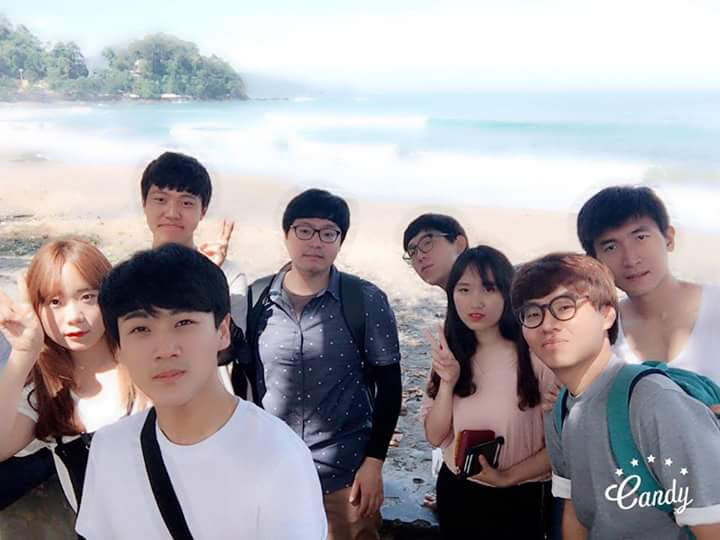

<div id="single-portfolio">
	<div id="portfolio-details" class="container">
		<a class="close-folio-item" href="#"><i class="fa fa-times"></i></a>
		
		<div class="row">
			<div class="col-sm-9">
				<div class="project-info">
					<h3>한밭대학교 인도네시아 탐방 </h3>
					<p>지난 2016년 6월 21일 한밭대학교 공학계열 2~3학년 학생들은 소외된 이웃들의 삶의 질 향상을 위한 현장조사와 사용자 면담을 위하여 인도네시아 ‘쑤카부미’에 방문을 통해, 해당지역의 활동 전문가인 가나안 농군학교 교장님과 함께 인도네시아 사람들의 삶은 어떤지 확인할 수 있었다. </p>
					<p>자신의 소박한 삶에 만족하고 항상 웃는 사람들과 아이들의 모습을 보면서, 나였으면 저렇게 행복하게 살 수 있을까 하는 생각이 들었고, 인도네시아 탐사를 하면서 내가 그들한테 도움을 줘야겠다는 생각보다, 오히려 마음의 도움을 많이 받았다. </p>
				</div>
			</div>
			<div class="col-sm-3">
				<div class="project-details">
					<h3>인도네시아</h3>
					<p><span>장소 : </span>쑤카부미</p>
					<p><span>Date:</span> 2016. 06. 21</p>
					<p><span>Tag:</span> 섬, 열대기후, 웃음</p>
				</div>  
			</div>
		</div>
	</div>
</div>